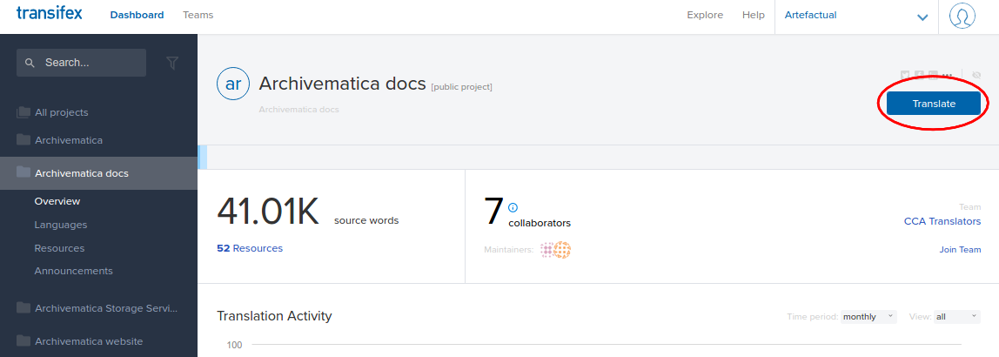
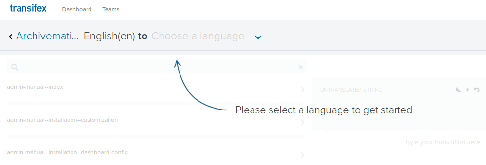
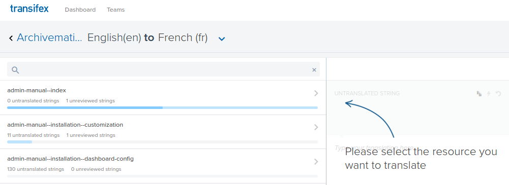
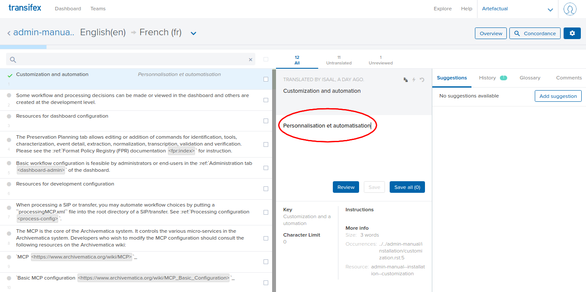
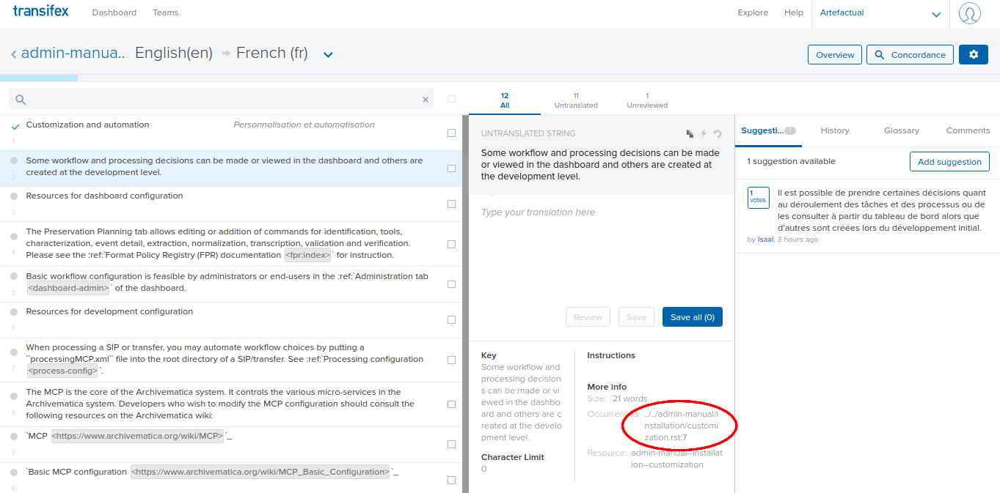
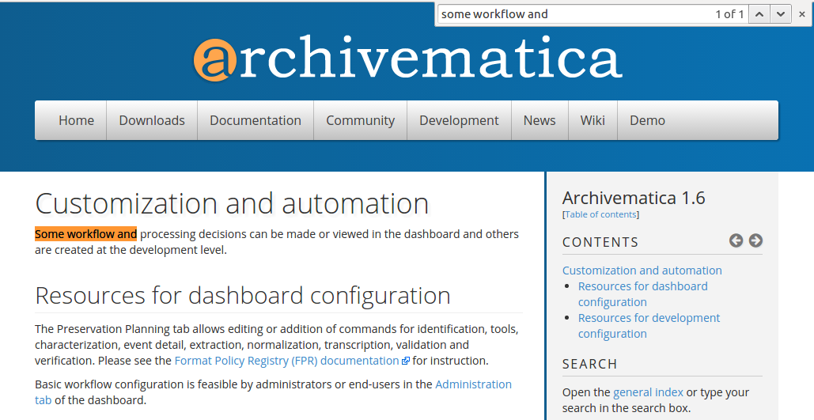
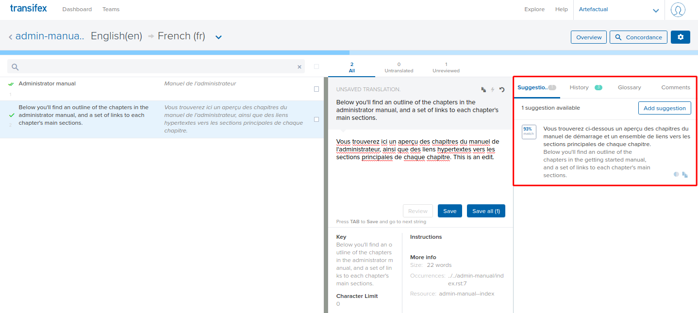
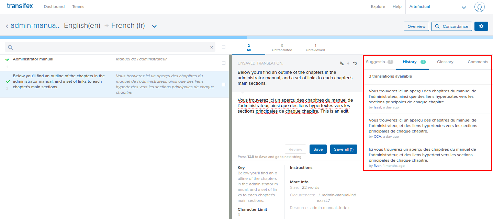

注釈
We are not currently working on translations for Archivematica. (March 2024)
翻訳¶
Archivematica の翻訳にご興味をお持ちいただきありがとうございます。コミュニティの翻訳者は、Archivematica を国際化して世界中で使用できるようにするために不可欠です。Archivematica プロジェクトにおけるボランティア翻訳者の皆様のご尽力に感謝いたします！
翻訳の公開をサポートするためにTransifexを使用しています。Transifex を使用することで、複数のユーザが翻訳された文字列を投稿できるようになり、ハーベスティングプロセスが迅速かつ容易になり、Artefactual は、より頻繁に翻訳を公開できるようになりました。Archivematica には、文書、インターフェース、ウェブサイト、Storage Serviceなど、翻訳すべきプロジェクトが複数あります。
このページでは：
Archivematica プロジェクトに参加¶
Transifex にアクセスし、ログインするか、アカウントをお持ちでない場合は作成してください。
アカウントを作成すると、設定ページにリダイレクトされます。名前と設定を入力してください。
2つ目の設定ページでは、独自のプロジェクトを開始するか、既存のプロジェクトに参加するかを選択できます。 既存のプロジェクトに参加 を選択します。
最後の設定ページでは、使用する言語を尋ねられます。該当するものをいくつでも選択し、 スタート をクリックしてください。
ポップアップウィンドウが表示されます。 翻訳するプロジェクトを探す をクリックすると、検索バーに archivematica と入力し、下に表示される Archivematica プロジェクトをクリックします。Archivematica プロジェクトのホームページにリダイレクトされます。
ページ右上で、 Join team を選択します。
ポップアップに利用可能な言語のリストが表示されます。選択した翻訳言語をリストから選択します。見つかったら、[送信] ボタンをクリックします (Archviematica を複数の言語に翻訳したい場合は、後でこのプロセスをもう一度繰り返すことができます)。
リクエストが送信されたことを知らせる確認メッセージが表示されます。Artefactual プロジェクトの管理者の一人がリクエストを確認し、アカウントを承認します。
翻訳開始¶
ご自身のアカウントが Archivematica プロジェクトの管理者によって承認されると、Transifex から電子メール通知が届きます。このメールを受信したら、Transifex の Archivematica プロジェクトのホームページ に戻ってください。
翻訳したいプロジェクト（Archivematica インターフェース、文書、Storage Service、ウェブサイト）を選択し、青い［翻訳］ボタンをクリックして翻訳を開始します。

翻訳ボタンを選択¶
画面の指示に従って、ドロップダウンから言語を選択してください。

言語を選択します。¶
選択した言語で利用可能なリソースの一覧ページに移動します。リソースとは、文書のページのような、プロジェクトの構成要素のことです。

リソースを選択します。¶
リソースを選択すると、翻訳エディターに移動します。このページから、翻訳するテキストの文字列（段落）を選択できます。すでに翻訳されている文字列には、左端に緑色のチェックマークが付いています。翻訳されていない文字列を選択すると、左端に灰色の丸が表示されます。
文字列を翻訳するには、中央の列に翻訳を入力します。完了したら、必ず 翻訳を保存 をクリックしてください！

文字列を翻訳します。¶
{kind=link}
{kind=link}
{kind=link}
{kind=link}
文字列のコンテキストを見つける¶
その文字列が現れる文脈を見なければ、その文字列の意味を見極めることは難しいかもしれません。以下のステップを踏めば、プロジェクトに登場する文字列を見ることができます。
Archivematica文書¶
翻訳エディタで、 詳細情報 というセクションを探します (ブラウザのサイズによっては、 コンテキスト をクリックする必要がある場合があります)。この下には、 Occurrences というサブセクションがあります。
出現頻度 には、その文字列が文書に出現する URLスラッグが含まれています。
..と.rstの間にあるスラッグの部分をコピーしてください。例えば、スラッグが../../admin-manual/installation/customization.rst:5の場合、/admin-manual/installation/customizationをコピーします。
文字列がどこから来たかを示すスラッグをコピーします。¶
https://www.archivematica.org/docs/archivematica-1.6（または翻訳する文書のバージョン、archivematica-1.7、1.8など）にアクセスします。コピーしたスラッグを上記のリンクに追加します。上記の例では、URLは
https://www.archivematica.org/docs/archivematica-1.6/admin-manual/installation/customizationとなります。エンターキーを押して、このURLに移動します。現在表示しているページには、翻訳中の文字列が含まれています。Ctrl+F (または command+F) を押して、文字列の最初の数単語を入力して、ページに記載されている文字列を検索します。

文字列は、オレンジ色でハイライトされています。この例ではGoogle Chromeを使用していることに注意してください。¶
{kind=link}
{kind=link}
翻訳された文字列の編集¶
より良い翻訳がある場合、または誤字を修正したい場合、他のユーザーによってすでに翻訳された文字列を編集したり、編集を推奨したりできます。
すでに翻訳されている文字列をクリックします。翻訳エディタで編集を行い、 翻訳の保存 をクリックします。

中央の欄で編集を行います。¶
直接編集するのではなく、提案を行うには、右側の列の「提案」をクリックします。 提案を追加 をクリックして、推奨事項を入力します。プロジェクトの管理者に提案が通知されます。

右側の欄に提案します。¶
文字列の編集履歴は、右側の列で見ることができます。
過去の編集とその作者を見ることができます。¶
{kind=link}
{kind=link}